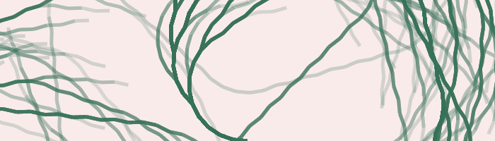

We want people to learn by doing. There are several ways for students to get involved in the course by programming themselves using Pluto. For example:
Pluto is great for a style of assignment, which we will call “guided assignments”.
The idea is a notebook that contains:
missing
Examples
For some examples, take a look at the homeworks from Computational Thinking at MIT, in particular Homework 1 and Homework 3, which are also featured Pluto notebooks.
JuliaCon talk
JuliaCon 2021 presentation on using Pluto at MIT, with interactive lectures and guided assignments.
One tool that may help you with guided assignments is PlutoSplitter.jl. This package lets you write a homework notebook with all the solutions already filled in, and then split it into two files: one with the solutions, and one with all answers removed. This lets you work on your answer-checking code easily, and then generate an assignment file for students.
Pluto is also a good tool for open-ended assignments, where students write the complete notebook themselves. For example, you could ask students to “Write a notebook that explores the Collatz conjecture, and explain it in an interactive way”. The end result could be an interactive article, or a presentation. Pluto is an easy environment for Julia newcomers to work in, which makes it easy for students to write a complete interactive article on their own.
Didactically, open-ended assignments in Pluto are really great! Pluto is designed to be a good playground to explore a computational topic. It’s safe to try things, and easy to use. By asking students to write an interactive article, you force them to dive into a topic and understand how it works.
From a technical perspective, Pluto’s reproducibility is really useful. It means that students can write a notebook with packages, interactivity, plots, etc., and you will know that you can open the notebook on your computer for review.

Pluto notebooks are quite easy to review because of the different export formats and Pluto’s reproducibility. From Fons’s experience, grading is the easiest if you ask students to hand in the assignment in HTML Export format (you can link students to the documentation for instructions). HTML files are fast to open and review (you don’t need to run student code). HTML files also contain the .jl notebook file if needed. I would recommend this over collecting Julia or PDF files.
.jl
If you are using Canvas for your course, you can use the SpeedGrader to review HTML files. This works very well in my experience! You can require submissions to be in HTML format, and speedgrader will let you cycle between student notebooks for grading.
You can combine this with a “Grading Rubric”. Then you will see the rubric next to the student’s notebook.
There are several small projects to do autograding of Pluto notebooks. TODO (feel free to contribute)